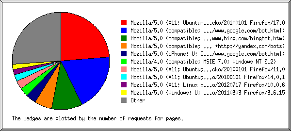
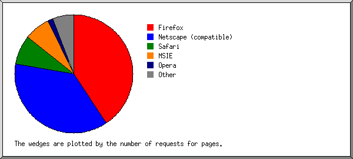
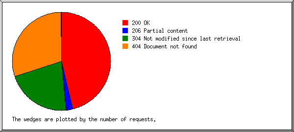

Web Server Statistics for icckundli.com
Web Server Statistics for icckundli.com
Program started on Sat, Jan 26 2013 at 2:35 PM.
Analyzed requests from Tue, Dec 18 2012 at 3:44 AM to Thu, Jan 24 2013 at 11:17 PM (37.81 days).
Web Server Statistics for icckundli.comProgram started on Sat, Jan 26 2013 at 2:35 PM.
Analyzed requests from Tue, Dec 18 2012 at 3:44 AM to Thu, Jan 24 2013 at 11:17 PM (37.81 days).
(Go To: Top | General Summary | Monthly Report | Daily Summary | Hourly Summary | Domain Report | Organization Report | Failed Referrer Report | Referring Site Report | Search Word Report | Browser Report | Browser Summary | Operating System Report | Status Code Report | File Size Report | File Type Report | Directory Report | Request Report)
Figures in parentheses refer to the 7-day period ending Jan 26 2013 at 2:35 PM.
Successful requests: 8,651 (77)
Average successful requests per day: 228 (10)
Successful requests for pages: 3,910 (65)
Average successful requests for pages per day: 103 (9)
Failed requests: 3,327 (15)
Distinct files requested: 31 (15)
Distinct hosts served: 99 (5)
Data transferred: 167.69 megabytes (1.85 megabytes)
Average data transferred per day: 4.43 megabytes (270.66 kilobytes)
(Go To: Top | General Summary | Monthly Report | Daily Summary | Hourly Summary | Domain Report | Organization Report | Failed Referrer Report | Referring Site Report | Search Word Report | Browser Report | Browser Summary | Operating System Report | Status Code Report | File Size Report | File Type Report | Directory Report | Request Report)
Each unit ( ) represents 80 requests for pages or part thereof.
) represents 80 requests for pages or part thereof.
| month | #reqs | #pages | |
|---|---|---|---|
| Dec 2012 | 6887 | 2627 |  |
| Jan 2013 | 1764 | 1283 |  |
Busiest month: Dec 2012 (2,627 requests for pages).
(Go To: Top | General Summary | Monthly Report | Daily Summary | Hourly Summary | Domain Report | Organization Report | Failed Referrer Report | Referring Site Report | Search Word Report | Browser Report | Browser Summary | Operating System Report | Status Code Report | File Size Report | File Type Report | Directory Report | Request Report)
Each unit () represents 30 requests for pages or part thereof.
| day | #reqs | #pages | |
|---|---|---|---|
| Sun | 317 | 215 |  |
| Mon | 305 | 165 |   |
| Tue | 4261 | 1275 | |
| Wed | 1995 | 1065 | |
| Thu | 863 | 614 | |
| Fri | 588 | 333 | |
| Sat | 322 | 243 | |
(Go To: Top | General Summary | Monthly Report | Daily Summary | Hourly Summary | Domain Report | Organization Report | Failed Referrer Report | Referring Site Report | Search Word Report | Browser Report | Browser Summary | Operating System Report | Status Code Report | File Size Report | File Type Report | Directory Report | Request Report)
Each unit () represents 20 requests for pages or part thereof.
| hour | #reqs | #pages | |
|---|---|---|---|
| 0 | 4 | 4 | |
| 1 | 1345 | 665 | |
| 2 | 219 | 82 | |
| 3 | 219 | 129 | |
| 4 | 2205 | 686 | |
| 5 | 951 | 430 | |
| 6 | 270 | 89 | |
| 7 | 748 | 353 | |
| 8 | 403 | 163 | |
| 9 | 425 | 225 | |
| 10 | 401 | 258 | |
| 11 | 108 | 68 | |
| 12 | 501 | 159 | |
| 13 | 226 | 96 | |
| 14 | 49 | 49 | |
| 15 | 27 | 20 | |
| 16 | 53 | 53 | |
| 17 | 43 | 43 | |
| 18 | 29 | 8 | |
| 19 | 114 | 30 | |
| 20 | 73 | 73 | |
| 21 | 92 | 81 | |
| 22 | 64 | 64 | |
| 23 | 82 | 82 | |
(Go To: Top | General Summary | Monthly Report | Daily Summary | Hourly Summary | Domain Report | Organization Report | Failed Referrer Report | Referring Site Report | Search Word Report | Browser Report | Browser Summary | Operating System Report | Status Code Report | File Size Report | File Type Report | Directory Report | Request Report)
Listing domains, sorted by the amount of traffic.
| #reqs | %bytes | domain |
|---|---|---|
| 8651 | 100% | [unresolved numerical addresses] |
(Go To: Top | General Summary | Monthly Report | Daily Summary | Hourly Summary | Domain Report | Organization Report | Failed Referrer Report | Referring Site Report | Search Word Report | Browser Report | Browser Summary | Operating System Report | Status Code Report | File Size Report | File Type Report | Directory Report | Request Report)

Listing the top 20 organizations by the number of requests, sorted by the number of requests.
| #reqs | %bytes | organization |
|---|---|---|
| 3975 | 32.10% | 183.82 |
| 1147 | 14.33% | 66.249 |
| 777 | 17.32% | 115 |
| 577 | 2.10% | 124 |
| 256 | 8.01% | 117 |
| 245 | 5.97% | 69 |
| 236 | 0.73% | 38 |
| 231 | 6.75% | 101 |
| 173 | 0.30% | 92 |
| 161 | 0.28% | 208.80 |
| 112 | 1.36% | 74 |
| 80 | 2.06% | 66.54 |
| 76 | 0.07% | 178.32 |
| 70 | 1.30% | 106 |
| 57 | 1.06% | 96 |
| 56 | 0.10% | 65.55 |
| 49 | 2.31% | 173.252 |
| 49 | 0.06% | 178.33 |
| 45 | 1.16% | 207.181 |
| 37 | 0.06% | 110 |
| 242 | 2.59% | [not listed: 16 organizations] |
(Go To: Top | General Summary | Monthly Report | Daily Summary | Hourly Summary | Domain Report | Organization Report | Failed Referrer Report | Referring Site Report | Search Word Report | Browser Report | Browser Summary | Operating System Report | Status Code Report | File Size Report | File Type Report | Directory Report | Request Report)

Listing referring URLs, sorted by the number of failed requests.
(Go To: Top | General Summary | Monthly Report | Daily Summary | Hourly Summary | Domain Report | Organization Report | Failed Referrer Report | Referring Site Report | Search Word Report | Browser Report | Browser Summary | Operating System Report | Status Code Report | File Size Report | File Type Report | Directory Report | Request Report)

Listing referring sites, sorted by the number of requests.
| #reqs | site |
|---|---|
| 3613 | http://www.icckundli.com/ |
| 1902 | http://icckundli.com/ |
| 35 | http://www.facebook.com/ |
| 29 | http://whois.domaintools.com/ |
| 24 | http://www.google.co.in/ |
| 14 | http://se.wsdata.com/ |
| 10 | http://www.google.com/ |
(Go To: Top | General Summary | Monthly Report | Daily Summary | Hourly Summary | Domain Report | Organization Report | Failed Referrer Report | Referring Site Report | Search Word Report | Browser Report | Browser Summary | Operating System Report | Status Code Report | File Size Report | File Type Report | Directory Report | Request Report)
Listing query words, sorted by the number of requests.
| #reqs | search term |
|---|---|
| 16 | allahabad.u.p.border |
(Go To: Top | General Summary | Monthly Report | Daily Summary | Hourly Summary | Domain Report | Organization Report | Failed Referrer Report | Referring Site Report | Search Word Report | Browser Report | Browser Summary | Operating System Report | Status Code Report | File Size Report | File Type Report | Directory Report | Request Report)

Listing the top 40 browsers by the number of requests for pages, sorted by the number of requests for pages.
| #reqs | #pages | browser |
|---|---|---|
| 4200 | 1424 | Mozilla/5.0 (X11; Ubuntu; Linux i686; rv:17.0) Gecko/20100101 Firefox/17.0 |
| 1043 | 847 | Mozilla/5.0 (compatible; Googlebot/2.1; +http://www.google.com/bot.html) |
| 173 | 173 | Mozilla/5.0 (X11; Ubuntu; Linux x86_64; rv:11.0) Gecko/20100101 Firefox/11.0 |
| 227 | 123 | Mozilla/5.0 (X11; Linux x86_64; rv:10.0.6) Gecko/20120717 Firefox/10.0.6 |
| 152 | 114 | Mozilla/4.0 (compatible; MSIE 7.0; Windows NT 5.2) |
| 391 | 105 | Mozilla/5.0 (Windows; U; Windows NT 6.1; en-US; rv:1.9.2.15) Gecko/20110303 Firefox/3.6.15 |
| 77 | 77 | Mozilla/5.0 (X11; Ubuntu; Linux i686; rv:14.0; ips-agent) Gecko/20100101 Firefox/14.0.1 |
| 171 | 63 | Mozilla/5.0 (Windows NT 6.1; rv:17.0) Gecko/20100101 Firefox/17.0 |
| 56 | 56 | msnbot/2.0b (+http://search.msn.com/msnbot.htm) |
| 130 | 50 | Mozilla/5.0 (Windows NT 5.1; rv:5.0.1) Gecko/20100101 Firefox/5.0.1 |
| 48 | 48 | Mozilla/4.0 (compatible; MSIE 7.0b; Windows NT 6.0) |
| 57 | 45 | panscient.com |
| 41 | 41 | Google-Site-Verification/1.0 |
| 37 | 37 | Yahoo! Slurp China |
| 26 | 26 | Mozilla/4.0 (compatible; MSIE 6.0; Windows 98; Win 9x4.90) |
| 32 | 24 | Mozilla/4.0 (compatible; http://search.thunderstone.com/texis/websearch/about.html) |
| 20 | 20 | Mozilla/5.0 (Windows; U; Windows NT 5.1; en; rv:1.9.0.13) Gecko/2009073022 Firefox/3.5.2 (.NET CLR 3.5.30729) SurveyBot/2.3 (DomainTools) |
| 180 | 20 | Mozilla/5.0 (Windows NT 5.2) AppleWebKit/537.11 (KHTML, like Gecko) Chrome/23.0.1271.97 Safari/537.11 |
| 20 | 20 | Mozilla/4.0 (compatible; MSIE 7.0; Windows NT 5.1) |
| 120 | 20 | Mozilla/5.0 (Windows NT 6.2; WOW64; rv:17.0) Gecko/20100101 Firefox/17.0 |
| 120 | 20 | Mozilla/5.0 (Windows NT 5.2; rv:17.0) Gecko/20100101 Firefox/17.0 |
| 19 | 19 | Mozilla/5.0 (Windows NT 5.1; U; en) Opera 8.01 |
| 19 | 19 | Lynx/2.8.6rel.4 libwww-FM/2.14 SSL-MM/1.4.1 OpenSSL/0.9.8g |
| 19 | 19 | Mozilla/4.0 (compatible; MSIE 8.0; Windows NT 6.1) |
| 19 | 19 | Mozilla/5.0 (Windows; U; Windows NT 6.1; en-US; rv:1.9.2.8) Gecko/20100722 Firefox/3.6.8 |
| 19 | 19 | Mozilla/5.0 (Windows NT 5.1) AppleWebKit/534.24 (KHTML, like Gecko) Chrome/11.0.696.68 Safari/534.24 |
| 19 | 19 | Mozilla/5.0 (Windows NT 5.1) Gecko/20100101 Firefox/7.0.1 |
| 19 | 19 | Mozilla/5.0 (Macintosh; Intel Mac OS X 10_6_6) AppleWebKit/535.1 (KHTML, like Gecko) Chrome/14.0.835.202 Safari/535.1 |
| 19 | 19 | Mozilla/5.0 (Macintosh; Intel Mac OS X 10_6_8) AppleWebKit/534.50 (KHTML, like Gecko) Version/5.1 Safari/534.50 |
| 19 | 19 | Mozilla/5.0 (Macintosh; Intel Mac OS X 10_7_2) AppleWebKit/534.52.7 (KHTML, like Gecko) Version/5.1 Safari/534.50 |
| 19 | 19 | Mozilla/5.0 (Windows NT 5.1; U; en-US; rv:1.9.1.6) Gecko/20091201 Firefox/3.5.6 Opera 10.70 |
| 90 | 18 | Mozilla/5.0 (Windows NT 6.1; WOW64; rv:17.0) Gecko/17.0 Firefox/17.0 |
| 90 | 18 | Mozilla/5.0 (Windows NT 6.2) AppleWebKit/537.11 (KHTML, like Gecko) Chrome/23.0.1271.97 Safari/537.11 |
| 16 | 16 | Mozilla/5.0 (compatible; 4SeoHuntBot; +http://4seohunt.com/bot.html) |
| 16 | 16 | Mozilla/5.0 (Windows; U; Windows NT 6.0; en-US; rv:1.9.0.6) Gecko/2009011913 Firefox/3.0.6 (.NET CLR 3.5.30729) |
| 16 | 16 | Mozilla/5.0 (compatible; MSIE 9.0; Windows NT 6.1; en) Opera 11.51 |
| 16 | 16 | Mozilla/5.0 (compatible; Konqueror/4.3; Linux) KHTML/4.3.5 (like Gecko) |
| 16 | 16 | Mozilla/5.0 (Windows; U; Windows NT 5.1; en-US; rv:1.9.1.8) Gecko/20100202 Firefox/3.5.8 ( .NET CLR 3.5.30729) |
| 80 | 16 | Mozilla/5.0 (Series40; Nokia311/03.81; Profile/MIDP-2.1 Configuration/CLDC-1.1) Gecko/20100401 S40OviBrowser/2.3.0.0.48 |
| 65 | 13 | Mozilla/5.0 (X11; Linux i686) AppleWebKit/537.11 (KHTML, like Gecko) Chrome/23.0.1271.97 Safari/537.11 |
| 687 | 174 | [not listed: 21 browsers] |
(Go To: Top | General Summary | Monthly Report | Daily Summary | Hourly Summary | Domain Report | Organization Report | Failed Referrer Report | Referring Site Report | Search Word Report | Browser Report | Browser Summary | Operating System Report | Status Code Report | File Size Report | File Type Report | Directory Report | Request Report)

Listing browsers with at least 1 request for a page, sorted by the number of requests for pages.
| # | #reqs | #pages | browser |
|---|---|---|---|
| 1 | 5992 | 2246 | Firefox |
| 4701 | 1545 | Firefox/17 | |
| 490 | 204 | Firefox/3 | |
| 173 | 173 | Firefox/11 | |
| 227 | 123 | Firefox/10 | |
| 156 | 96 | Firefox/14 | |
| 130 | 50 | Firefox/5 | |
| 28 | 28 | Firefox/7 | |
| 70 | 10 | Firefox/12 | |
| 9 | 9 | Firefox/9 | |
| 8 | 8 | Firefox/13 | |
| 2 | 1104 | 900 | Netscape (compatible) |
| 3 | 297 | 259 | MSIE |
| 220 | 182 | MSIE/7 | |
| 49 | 49 | MSIE/6 | |
| 19 | 19 | MSIE/8 | |
| 9 | 9 | MSIE/9 | |
| 4 | 481 | 137 | Safari |
| 405 | 61 | Safari/537 | |
| 57 | 57 | Safari/534 | |
| 19 | 19 | Safari/535 | |
| 5 | 64 | 64 | Opera |
| 29 | 29 | Opera/9 | |
| 19 | 19 | Opera/8 | |
| 16 | 16 | Opera/11 | |
| 6 | 56 | 56 | msnbot |
| 56 | 56 | msnbot/2 | |
| 7 | 57 | 45 | panscient.com |
| 8 | 41 | 41 | Google-Site-Verification |
| 41 | 41 | Google-Site-Verification/1 | |
| 9 | 37 | 37 | Yahoo! Slurp China |
| 10 | 19 | 19 | Lynx |
| 19 | 19 | Lynx/2 | |
| 11 | 16 | 16 | Konqueror |
| 16 | 16 | Konqueror/4 | |
| 12 | 80 | 16 | Mozilla |
| 13 | 239 | 10 | facebookexternalhit |
| 239 | 10 | facebookexternalhit/1 | |
| 14 | 8 | 8 | Python-urllib |
| 8 | 8 | Python-urllib/2 | |
| 15 | 7 | 7 | BlackBerry9000 |
| 7 | 7 | BlackBerry9000/4 | |
| 16 | 1 | 1 | Mozila |
| 1 | 1 | Mozila/5 | |
| 104 | 0 | [not listed: 1 browser] |
(Go To: Top | General Summary | Monthly Report | Daily Summary | Hourly Summary | Domain Report | Organization Report | Failed Referrer Report | Referring Site Report | Search Word Report | Browser Report | Browser Summary | Operating System Report | Status Code Report | File Size Report | File Type Report | Directory Report | Request Report)

Listing operating systems, sorted by the number of requests for pages.
| # | #reqs | #pages | OS |
|---|---|---|---|
| 1 | 4843 | 1851 | Unix |
| 4843 | 1851 | Linux | |
| 2 | 1556 | 1047 | OS unknown |
| 3 | 1932 | 796 | Windows |
| 1160 | 402 | Unknown Windows | |
| 289 | 209 | Windows XP | |
| 457 | 159 | Windows Server 2003 | |
| 26 | 26 | Windows 98 | |
| 4 | 197 | 93 | Known robots |
| 5 | 75 | 75 | Macintosh |
(Go To: Top | General Summary | Monthly Report | Daily Summary | Hourly Summary | Domain Report | Organization Report | Failed Referrer Report | Referring Site Report | Search Word Report | Browser Report | Browser Summary | Operating System Report | Status Code Report | File Size Report | File Type Report | Directory Report | Request Report)

Listing status codes, sorted numerically.
| #reqs | status code |
|---|---|
| 4841 | 200 OK |
| 379 | 206 Partial content |
| 3431 | 304 Not modified since last retrieval |
| 3327 | 404 Document not found |
(Go To: Top | General Summary | Monthly Report | Daily Summary | Hourly Summary | Domain Report | Organization Report | Failed Referrer Report | Referring Site Report | Search Word Report | Browser Report | Browser Summary | Operating System Report | Status Code Report | File Size Report | File Type Report | Directory Report | Request Report)

| size | #reqs | %bytes |
|---|---|---|
| 0 | 3494 | |
| 1B- 10B | 30 | |
| 11B- 100B | 31 | |
| 101B- 1kB | 180 | 0.06% |
| 1kB- 10kB | 3425 | 5.31% |
| 10kB-100kB | 860 | 38.41% |
| 100kB- 1MB | 631 | 56.22% |
(Go To: Top | General Summary | Monthly Report | Daily Summary | Hourly Summary | Domain Report | Organization Report | Failed Referrer Report | Referring Site Report | Search Word Report | Browser Report | Browser Summary | Operating System Report | Status Code Report | File Size Report | File Type Report | Directory Report | Request Report)

Listing extensions with at least 0.1% of the traffic, sorted by the amount of traffic.
| #reqs | %bytes | extension |
|---|---|---|
| 3032 | 62.93% | .png [PNG graphics] |
| 634 | 28.59% | .js [JavaScript code] |
| 1075 | 3.87% | .css [Cascading Style Sheets] |
| 2085 | 2.78% | [directories] |
| 1825 | 1.82% | .html [Hypertext Markup Language] |
(Go To: Top | General Summary | Monthly Report | Daily Summary | Hourly Summary | Domain Report | Organization Report | Failed Referrer Report | Referring Site Report | Search Word Report | Browser Report | Browser Summary | Operating System Report | Status Code Report | File Size Report | File Type Report | Directory Report | Request Report)

Listing directories with at least 0.01% of the traffic, sorted by the amount of traffic.
| #reqs | %bytes | directory |
|---|---|---|
| 3052 | 62.94% | /images/ |
| 4841 | 36.85% | [root directory] |
| 758 | 0.22% | /css/ |
(Go To: Top | General Summary | Monthly Report | Daily Summary | Hourly Summary | Domain Report | Organization Report | Failed Referrer Report | Referring Site Report | Search Word Report | Browser Report | Browser Summary | Operating System Report | Status Code Report | File Size Report | File Type Report | Directory Report | Request Report)

Listing files with at least 20 requests, sorted by the number of requests.
| #reqs | %bytes | last time | file |
|---|---|---|---|
| 2065 | 2.78% | Jan/24/13 11:17 PM | / |
| 10 | 0.02% | Dec/31/12 10:40 AM | /?72.14.199.193 |
| 770 | 25.05% | Jan/12/13 4:05 AM | /images/2.png |
| 758 | 0.22% | Jan/12/13 4:05 AM | /css/style.css |
| 641 | 22.62% | Jan/13/13 12:09 PM | /images/1.png |
| 639 | 0.23% | Jan/12/13 4:05 AM | /images/tagline.png |
| 571 | 0.32% | Jan/23/13 12:21 PM | /contact.html |
| 402 | 0.53% | Jan/23/13 12:21 PM | /services.html |
| 384 | 0.55% | Jan/23/13 12:21 PM | /places.html |
| 370 | 0.22% | Dec/19/12 1:01 AM | /images/main.png |
| 330 | 0.05% | Dec/18/12 1:41 PM | /images/facebook.png |
| 317 | 3.65% | Jan/10/13 1:46 AM | /jquery-ui.css |
| 317 | 19.81% | Jan/23/13 12:22 PM | /jquery-ui.min.js |
| 317 | 8.78% | Jan/23/13 12:22 PM | /jquery.min.js |
| 282 | 14.78% | Jan/10/13 1:46 AM | /images/warehouse.png |
| 222 | 0.20% | Jan/23/13 12:22 PM | /career-iccl.html |
| 205 | 0.22% | Jan/23/13 12:21 PM | /static_pages.html |
| 31 | Jan/11/13 11:12 AM | /google6b3ae17c482ee4d5.html | |
| 20 | Dec/18/12 4:01 AM | /images/ | |
| 10 | 0.01% | Dec/18/12 3:44 AM | [not listed: 1 file] |